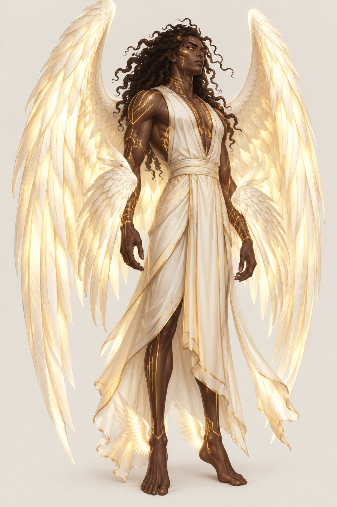
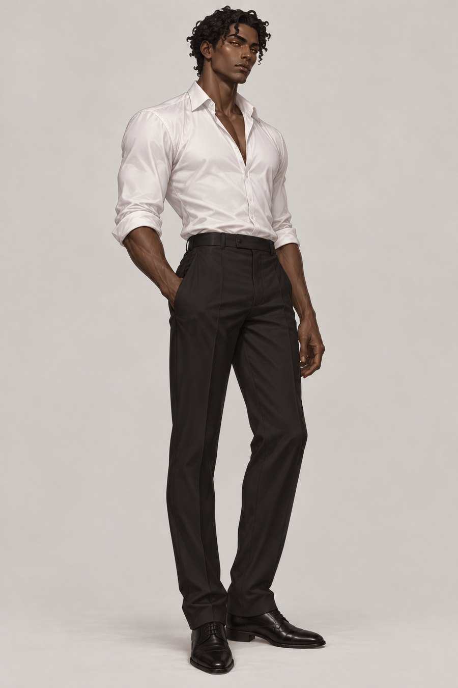

The Vatrajarə

Created by Jangshe and Ashraaha, fitted to a realm of heavy light and floating stone.
This section follows the Aempaera and Ishphaeno reference documents. Lines without a tag are settled. Tags mark anything less settled. Names are given in Vatrahu unless a Vatraxu form is named.
At a glance
- Name
- Vatrajarə in Vatrahu, Vatrajaro in Vatraxu. Sometimes written Vertroue in older documents.
- Size
- A Vatrajarə born in Aempaera stands about 7 feet in true form. Those who were once human, and now carry human proportions, stand 5 feet 8 inches or more. Size shows origin, not power. All are much larger in true form than in human disguise.
- Skin
- The full range of dark skin tones inherited from Ashraaha. Albino and pale expressions exist and are rarer.
- Eyes
- White sclera with gold irises, from Jangshe. In disguise the gold dulls to warm brown or hazel.
- Hair
- Springy coils and loose curls, in natural patterns. In Aempaera or at full power the hair moves by intention, not gravity.
- Needs
- No sleep, food or breath. They practise a chosen stillness, which refills aethaari and can be broken at will.
Gold markings
Gold geometric lines show on the skin like circuitry. They are plain in Aempaera’s light and when power is released in full, and they go dormant in human disguise. Under strong feeling they surface unbidden, first at the temples, breastbone and forearms. The design draws on two traditions, reinterpreted: Maya geometric patterns that are not writing, and the Inuit kakiniit tradition of accumulating lines. As in kakiniit, markings begin sparse and grow outward as rank and power grow. Each domain shapes the pattern.
| Rank | Where markings start | Where they grow |
|---|---|---|
| Laer, new | Breastbone only, one or two lines | Outward to the ribs |
| Laer, established | Breastbone and forearms | Up toward the shoulders |
| Paev | Breastbone, forearms, upper arms, temples starting | Toward the face and back |
| Theraav | Breastbone, arms, temples, collarbones, upper back | Toward the face and shoulder blades |
| Ashraat | Full chest, arms, temples, face starting | Toward the jaw and spine |
| AshraaPaev | Breastbone, arms, temples, collarbones, upper back, in a pattern of their own domain | Across chest and shoulder blades |
| Theraapaev | Full chest, arms, temples, face, in stepped angular frets | Toward the jaw and spine |
| Ashraatipaev | The whole body | The fullest expression possible. Ancient lines never fully hide |
Wings and rank
Every Vatrajarə has ivory wings with a lit quality, because the feathers are hollow and filled with aethaari. Wings furl for everyday movement and open fully when power is released. The number and placement of pairs shows rank. Size grows with age and accumulated power, not with rank.
| Rank | Pairs | Where | Notes |
|---|---|---|---|
| Laer | 1 | Feet and ankles | The lowest rank. It includes souls remade from mortals. |
| Paev | 2 | Feet and wrists | The wrist wings give combat-level directional control. |
| Theraav | 3 | Feet, back, eyes | No wrist wings. They report only to Jangshe, Ashraaha and Mikael. |
| Ashraat | 4 | Feet, back, eyes, temples | No wrist wings. The prime guardian force of Aempaera. |
| AshraaPaev | 3 | Feet, wrists, back | The six regular Holy Princes. Wrist wings mark a general. |
| Theraapaev | 4 | Feet, wrists, back, eyes | Theraav rank with wrist wings, held by Mikael and, before the Fall, Lioshe. |
| Ashraatipaev | 5 | Feet, wrists, back, eyes, temples | Ashraat rank with wrist wings. Held before the Fall by Sadok alone. |
The suffix -paev marks a general above regular Paev rank. It joins a general’s duties to whatever rank the person already holds. It is not a separate tier.
Back wings are the largest and carry flight and power. Wrist wings are medium and the most emotional, flaring before any other pair moves. Ankle wings are small and steer precisely. Eye wings are small, delicate and largely involuntary. Temple wings are like the eye wings and angle upward and back. Ancient beings, such as the Holy Princes, have back wings far wider than their arm span.
Power
| Name | What it is |
|---|---|
| Ashraavatra, True Voice | It projects Aempaera’s own frequency into the mortal world without the slow adjustment of the Praise Fields. For mortals this is a physics mismatch that hurts. The Holy Princes’ voice also carries a pull on the conscience: everyone in range feels their own guilt surface, with no one singled out. The name is the same in Vatrahu and Vatraxu. |
| Aethjaruh, aura | The environment of Aempaera leaking from the body at all times. It falls with power use and with distance from Aempaera. In disguise it mutes to a warmth that mortals read as charisma. |
| Kraethjaruh, aura flare | The aura pushed outward at full strength as a weapon. It is especially devastating to the fallen and their children, who are sensitive to aethaari because they fell from it. The Sekh resist it fairly well when prepared. For them it is uncomfortable closeness to something very bright. |
| Aethmaalithi, hard light | Condensing aethaari into blades, arrows, barriers and projectiles by will and skill. An ordinary Vatrajarə carries a forged handle or bow frame and makes the rest from light. The higher the rank, the less they carry. The Holy Princes at full power may anchor to nothing. Making ammunition from their own reserves is a heavy drain. |
| Aethmaale | Holy forged material made from aethaari and inscribed with working runes. See the weapons that hurt Lamiae and Anu. |
Human disguise

Any Vatrajarə can hide what they are. Gold irises dull, markings sleep, wings and rank marks are hidden, and the aura softens. A higher rank takes more effort to hold. Under stress, the eyes slip first, as the gold bleeds back, and then the hair, which briefly moves against gravity.
Open questions
- How rank advancement works beyond meditative practice Open
- Whether the Vo’im, children of Vatrajarə and humans, have a place in the rank system Open